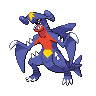
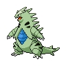
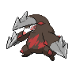

Search for a solution
Change the Pokémon, moves, or items until you find a strong team.
The output is a team
Evolving teams directly is ordinary solution search, even if it uses an evolutionary algorithm.
From hyper-heuristics to your Pokémon search
What if your algorithm could invent the rules it searches with? Explore how heuristics are generated, how to test them, and where this fits in your project.
Everything you need is on this page. Move through it at your own pace.
 Slot 1
Slot 1 Try an edit
Try an edit
Slot 3
Try an edit
Slot 6First, name what is changing
A heuristic is a shortcut that guides a decision. It might rank candidate teams, choose an edit, or decide when to restart. A hyper-heuristic operates one level above those decisions.
Change the Pokémon, moves, or items until you find a strong team.
Evolving teams directly is ordinary solution search, even if it uses an evolutionary algorithm.
Choose between rules you already supplied, such as swap a slot, edit a move, or restart.
This is a selection hyper-heuristic. Its action menu comes from you.
Construct a new formula or program, then test whether searches using it find better teams.
This is the generation hyper-heuristic idea you were looking for.
Terminology follows Burke and colleagues' hyper-heuristics survey.
Follow the feedback
The outer loop searches for a useful heuristic. Every candidate heuristic has to guide an inner search before you can judge it.
Generate a small decision rule with a precise input and output. For example, choose which team slots to regenerate.
h(features)A formula, program,
or trained policy
Repeat within the same search budget.
Fresh development battles
estimate the resulting
team's win rate.
Feed the outcome back to the generator. Revise the rule, then try another candidate.
A useful rule is more than a plausible formula. Its fitness comes from the searches it causes, not from an LLM saying it looks clever.
Nested evaluation is expensive. Each proposed rule may need several complete searches. Count that discovery cost separately from later use.
Choose what the generator can build
The practical starting points are genetic programming, grammatical evolution, and LLM code evolution. Neural learning and configuration are useful neighbors, with different meanings of “learn a heuristic.”
For this project, reuse your existing LLM loop first. Try typed genetic programming as a comparison when you want formulas you can inspect without LLM calls. A new framework alone will not solve the evaluation problem.
See the implementation pathMake the distinction tangible
Three possible edits have three invented features: coverage c, speed support s, and defensive support d. The rule ranks which edit to try first.
The starting rule adds all three features. The edit with the greatest sum ranks first.
Tuning changes values inside the same structure. Generation can change the calculation itself. Here, the minimum rule favors an edit with no very weak feature.
The formulas use different score scales. A higher displayed score across two formulas does not mean a stronger team. Battle evaluation must decide whether the rule actually helps.
The mistake to catch early
Your current prototype generates keep(team) → bool rules. It rewards retaining known competitive teams while discarding much of a random legal sample. That measures pruning behavior, not the win rate of teams a search will find.
Change the threshold to see how the same fixed sample passes or fails. “Conventional score” is a made-up feature for this demonstration.
5 / 5 kept
Known competitive teams kept ÷ tested
Random legal sample kept ÷ tested
At threshold 7, the rule keeps every reference team and only 2 of 10 random teams. Is that enough to know it keeps the best counter?
Turn the idea into an experiment
Your pilot has an LLM loop that proposes, compiles, evaluates, and saves rules. Start by changing one narrow search decision and improving how you score it.
keep(team) → boolScore competitive-team retention r and random-space retention q. This tells you which teams the filter removes.
choose_mask(features, context)
→ slots_to_regenerateKeep the refill and legality checks. Score the battle win rates of teams produced by complete searches.
The proposed function is an interface idea, not code already implemented. The separate mutation experiment has a useful insertion point for choosing slots or edits.
Define exactly what the rule sees and returns. Start with a valid mask over six team slots. Use features available at that decision; account for any extra feature-computation cost.
Reuse the current LLM proposer with seed code and this contract. Alternatively, define typed GP inputs and operations in DEAP. Limit rule complexity. Run generated code in isolation with time and resource limits.
Use the rule inside the existing mutation experiment. Preserve the validator, refiller, battle policy, starting inputs, and inner-search budget. Compare with the existing rule and an appropriate random or tuned baseline.
Give the generator development feedback. Choose a rule using validation runs. Freeze its code and configuration before final testing on fresh runs and battles.
Feedback may change the heuristic.
Select, then freeze the code.
Results do not feed back into selection.
Use the same opponent set and weighting, battle policies, starting inputs, and search budget. Pair search seeds where practical. Repeat independent searches and report variation as well as the resulting teams' win rates.
Higher measured battle win rate under the agreed comparison. Retention, a surrogate prediction, a clever explanation, or one lucky search is not enough to establish that improvement.
Keep that opponent fixed and use independent search and battle seeds. Test unseen opponents when you want to claim transfer to new matchups. Do not silently invent a new opponent distribution.
Report discovery cost separately from deployment cost. Discovery includes unsuccessful heuristic candidates, searches, battles, and LLM calls. Deployment is one search using the frozen rule.
One last check
An algorithm evolves a reusable function that chooses which Pokémon slot to edit. That function then guides new team searches.
What did the outer search produce?
Choose an answer to reveal the explanation.